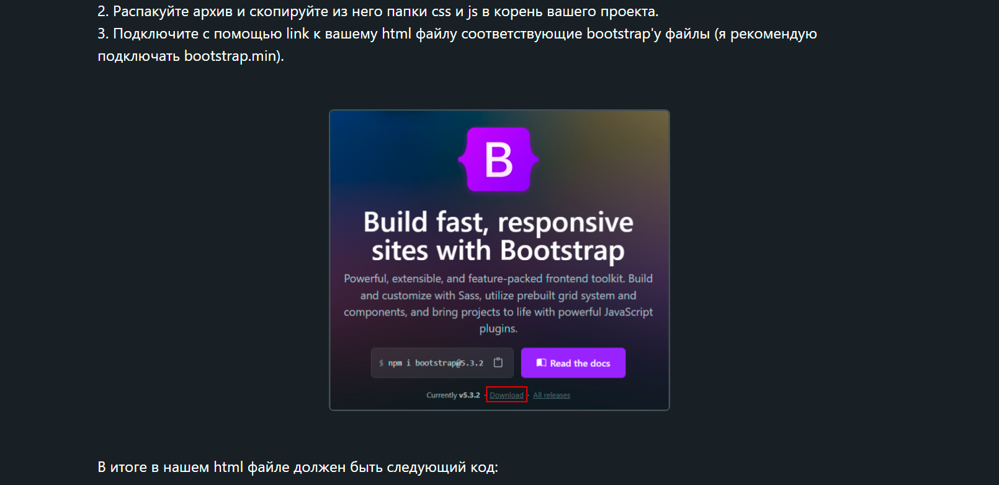
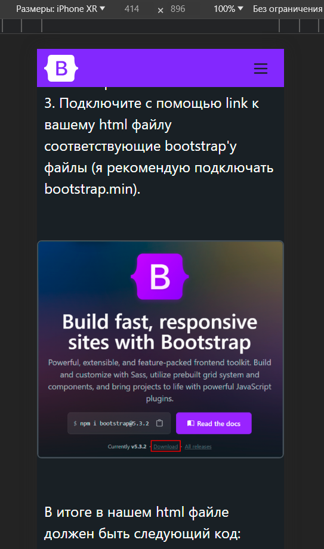

Урок 4 Адаптивные колонки и flex-классы
Изменение колонок в зависимости от ширины экрана
Ширина ваших колонок, с классом .col уже будет изменяться вместе с изменение ширины вашего экрана. Но если вам надо, чтобы определённый элемент имел различную ширину в зависимости от устройства, вы можете настроить это с помощью определённых классов колонок, реагирующих на уже известные нам точки останова. Например, вы можете сделать так, что элемент занимает половину доступного контейнера на широких устройствах, и полный контейнер.
В качестве примера, рассмотрим непосредственно этот сайт.
В первом уроке у нас есть отличный пример.
На десктопных экранах эта картинка занимает всего 550 пикселей и 5 колонок в ширину. Но если вы будете просматривать эту страницу с телефона, то эта картинка растянется на все 12 колонок:
Вот на этом и строится весь адаптив bootstrap. Вы можете просто настроить сколько каждый элемент может занимать пространства, в зависимости от ширины. Вот как выглядит код, отвечающий за эту картинку:

<img class="col-12 col-md-5 lesson-img" src="../images/lesson-1-imgs/image 1.png" alt="download-link">
Всё что я сделал - это придал элементу следующие классы: col-12 col-md-5. Тут всё построено следующим образом: Элемент всегда занимает 12 колонок ширины. Но при условии, когда ширина экрана больше, или равна md, то есть 768 пикселей, элемент занимает 5 колонок ширины.
Всё из за логики mobile first. В моём примере col-12 - это стандартная ширина элемента, то есть ширина для мобильных устройств. и поэтому, мне пришлось добавить класс с контрольной точкой col-md-5 для того, что бы на десктопных экранах этот элемент не был во всю ширину, ибо это не имеет смысла.
Но что делать, если обычного выравнивания шириной не достаточно? в таком случае не стоит спешить и писать свои собственные CSS стили. Bootstrap уже всё продумал.
Flex-классы в Bootstrap
Я надеюсь вы уже знакомы с flexbox контейнерами в обычном CSS, потому что понимая их, вы легко поймёте и логику самого bootstrap. И когда нужно выровнять что то по всей ширине контейнера, карточки товаров, или например шапку, никто не выручает так сильно как flexbox'ы. И вам не требуется отдельно прописывать flex стили в вашем CSS. Вы можете точно так же прописать display:flex или justify-content Непосредственно в классах ваших элементов. И даже больше, вам не придётся делать лишние media запросы, если вы хотите делать flex элементы только на определённых экранах.
Примените display утилиты для создания контейнера flexbox и преобразуйте прямые дочерние элементы в элементы flex. Flex-контейнеры и элементы можно дополнительно модифицировать с помощью дополнительных гибких свойств.
<div class="d-flex">I'm a flexbox container!</div>
<div class="d-inline-flex">I'm an inline flexbox container!</div>
Адаптивные варианты также существуют для .d-flex и .d-inline-flex:
.d-flex.d-inline-flex.d-sm-flex.d-sm-inline-flex.d-md-flex.d-md-inline-flex.d-lg-flex.d-lg-inline-flex.d-xl-flex.d-xl-inline-flex.d-xxl-flex.d-xxl-inline-flex
Вы придаёте эти свойства родительскому контейнеру, и у вас уже есть готовый flex контейнер. В разы меньше кода, чем если бы вы это делали в CSS, не так ли?
И с выравниванием дочерних элементов всё так же просто. всего лишь нужно придать контейнеру нужный вас стиль, будь то .flex-row-reverse, .justify-content-sm-center или .align-items-lg-start. Я думаю вы уже поняли что стилей тут так же много, как и в списке выше. Для каждого, например, align-items-end существует ещё много вариаций с контрольными точками, которые нет смысла описывать, ибо и так логика понятна: есть свойство, и есть это же свойство с префиксом или постфиксом с шириной, например .flex-sm-nowrap. С полным списком и примерами можно ознакомиться в документации. Ссылка в шапке.
Padding и Margin
Не менее важные свойства, с которыми мы так или иначе взаимодействуем всегда - это внешние и внутренние отступы. И не смотря на то, как они важны, я лишь немного опишу их, ибо работают они точно так же как и в примере с flex, и понять логику можно почти мгновенно.
Margin и padding задаются классами m-5 и p-5 соответственно. Но измеряются отступы не в пикселях, а в rem. От .25rem До 3rem, Следовательно от m-1 до m-5. Есть ещё конечно m-0, который очевидно убирает отступ. А так же есть классы mt-5 или mb-0, отвечающие конкретно за отступы сверху и снизу. За отступы же по бокам отвечает ms-1 слева, и me-1 справа. Логика тут простая. ms - это margin-start, а me - это margin-end. Так же стоит упомянуть про m-auto, который выравнивает дочерний элемент по центру.
И конечно же не обошлось без контрольных точек. У нас есть замечательные классы m-lg-5 или например p-sm-auto для выравниваний в зависимости от ширины экрана.
Итог
В заключении, чтобы разом показать вам всё изученное, рассмотрим следующий пример:
<div class="d-flex align-items-start flex-column mb-3" style="height: 200px;">
<div class="mb-auto p-2">Flex item</div>
<div class="p-2">Flex item</div>
<div class="p-2">Flex item</div>
</div>
<div class="d-flex align-items-end flex-column mb-3" style="height: 200px;">
<div class="p-2">Flex item</div>
<div class="p-2">Flex item</div>
<div class="mt-auto p-2">Flex item</div>
</div>
Как видно, в этом примере используются классы d-flex align-items-end flex-column для выравнивания в первом контейнере, и mb-3 для отступа между 1 и 2 контейнерами
 Следующий урок
Следующий урок
 Перейти к тесту
Перейти к тесту